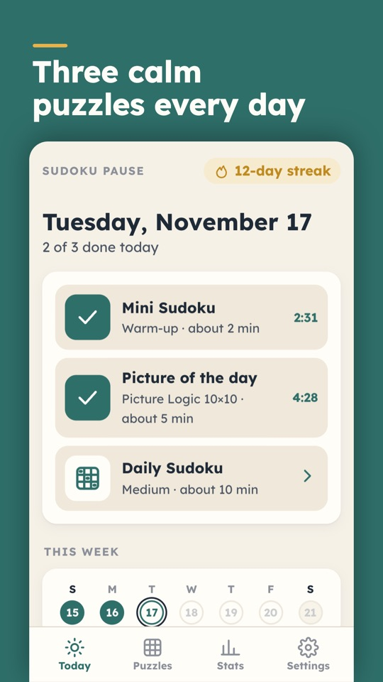
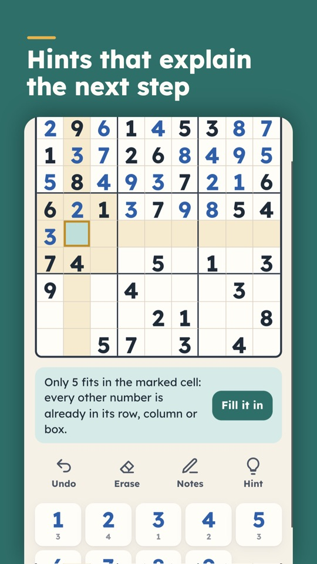
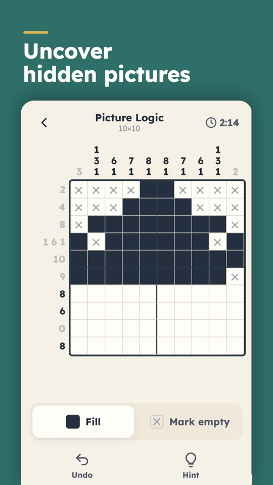
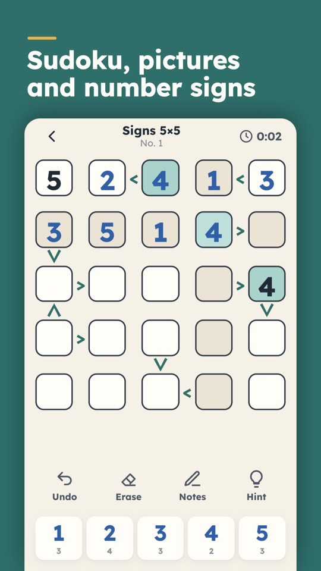

Sudoku Pause
Three calm puzzles a day · Support
Sudoku Pause gives you a small set of logic puzzles every day: a warm-up (Mini Sudoku, Signs, Bridges or Stars), a picture to uncover and a Sudoku. More Sudoku, Signs, Bridges, Stars, pictures and patterns are there whenever you want them. Big, readable numbers, adjustable text size, no time pressure, and hints that explain the next step. No account, your progress stays on your phone.
Play in your browser Free, no sign-up. The app for Android and iPhone is on its way.




Contact
Questions, a bug, or an idea for a picture: support@calmappslab.com. We usually reply within two working days.
Questions
Is the daily set the same for everyone? Yes. Every phone creates the same puzzles for the same day, even offline, so you can compare with friends.
Can every puzzle be solved without guessing? Yes. Each puzzle is checked to have exactly one solution that logic alone can reach.
Does it need the internet? No. Everything works offline.
Are there ads or purchases? No. Sudoku Pause is free, with no ads and nothing to buy.
What is a rest day? Up to two missed days a week keep your streak, as long as you play the day before and the day after.
How do I make the text bigger? Settings, Text size. You can also pick it at the first start.
How do I delete my data? Settings has "Reset all progress". Uninstalling the app also removes everything.
Privacy
We receive no personal data and the app collects none. Details in the privacy policy.
Auf Deutsch
Sudoku Pause bringt jeden Tag drei ruhige Logikrätsel: zum Aufwärmen ein Mini-Sudoku, ein Zeichen- oder ein Brücken-Rätsel, ein Bilderrätsel und ein Sudoku. Große Zahlen, einstellbare Schriftgröße, kein Zeitdruck und Tipps, die den nächsten Schritt erklären. Keine Werbung, keine Käufe, alles funktioniert offline. Kontakt: support@calmappslab.com. Datenschutz.
En français
Sudoku Pause propose chaque jour trois énigmes calmes : un échauffement (mini sudoku, Signes ou Ponts), une image à découvrir et un sudoku. Sans publicité ni achats, tout fonctionne hors ligne. Contact : support@calmappslab.com. Confidentialité.
En español
Sudoku Pause te da cada día tres acertijos tranquilos: un calentamiento (mini sudoku, Signos o Puentes), una imagen por descubrir y un sudoku. Sin anuncios ni compras, todo funciona sin conexión. Contacto: support@calmappslab.com. Privacidad.
Em português
O Sudoku Pause traz todo dia três desafios calmos: um aquecimento (mini sudoku, Sinais ou Pontes), uma imagem para revelar e um sudoku. Sem anúncios e sem compras, tudo funciona offline. Contato: support@calmappslab.com. Privacidade.
In italiano
Sudoku Pause offre ogni giorno tre rompicapi rilassanti: un riscaldamento (mini sudoku, Segni o Ponti), un'immagine da scoprire e un sudoku. Niente pubblicità né acquisti, tutto funziona offline. Contatti: support@calmappslab.com. Privacy.
日本語
Sudoku Pause は毎日3つのおだやかなパズルを届けます。ウォームアップ (ミニナンプレ、不等号、橋かけ)、お絵かきロジック、ナンプレです。広告も課金もなく、オフラインで遊べます。お問い合わせ: support@calmappslab.com。プライバシー
По-русски
Sudoku Pause каждый день даёт три спокойные головоломки: разминку (мини-судоку, «Знаки» или «Мосты»), картинку и судоку. Крупные цифры, настраиваемый размер текста, подсказки объясняют следующий шаг. Без рекламы и покупок, всё работает без интернета. Связь: support@calmappslab.com. Конфиденциальность.
CalmAppsLab · calm-apps-lab.github.io